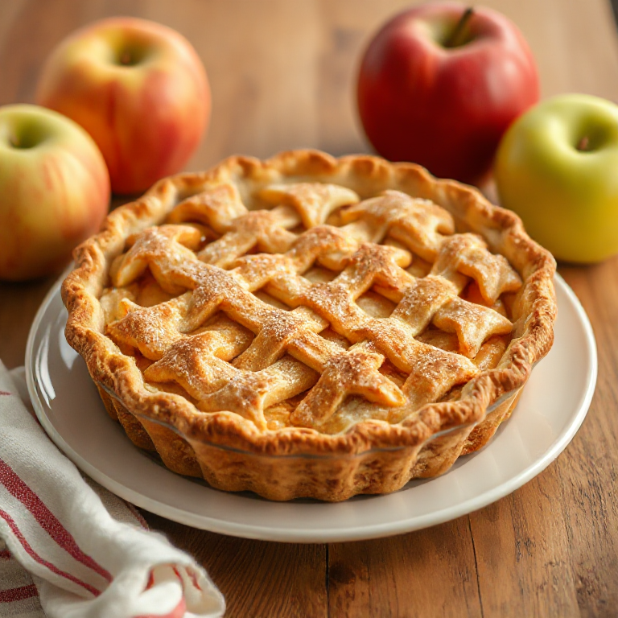

This photo was generated with FLUX.1-schnell locally using DiffusionBee
Ingredients:
For the Pie Crust:
2 1/2 cups (300g) all-purpose flour, plus more for dusting
1 tsp kosher salt
2 tbsp (28g) granulated sugar
1 cup (227g) unsalted butter, cold and cut into small cubes
6-8 tbsp ice-cold water
For the Apple Filling:
3 lbs (1.35 kg) apples, peeled, cored, and sliced (about 6-8 medium apples; use a mix of Granny Smith, Golden Delicious, or Jonagold)
3/4 cup (150g) granulated sugar
2 tbsp (16g) all-purpose flour
1 tsp ground cinnamon
1/2 tsp ground nutmeg
1/4 tsp kosher salt
2 tbsp (28g) unsalted butter, cut into small pieces
For the Egg Wash:
1 large egg, beaten
1 tbsp (15ml) milk or water
Coarse sugar or turbinado sugar, for sprinkling (optional)
Instructions:
For the Pie Crust:
In a food processor fitted with the dough blade, combine flour, salt, and granulated sugar. Pulse briefly to mix.
Add cold cubed butter to the food processor and pulse until the mixture resembles coarse crumbs, about 8-10 pulses.
Gradually add ice-cold water, pulsing after each addition until the dough just comes together. You may need more or less water depending on the humidity; use as little as possible without compromising the dough's ability to form a ball.
Divide the dough into two equal pieces and shape each piece into a flat disk about 1-inch thick. Wrap each disk in plastic wrap and refrigerate for at least 2 hours or up to overnight.
For the Apple Filling:
In a large bowl, combine sliced apples, granulated sugar, all-purpose flour, cinnamon, nutmeg, and salt. Toss gently to coat evenly.
Set aside while you prepare the pie crust.
Assembling the Pie:
Preheat your oven to 400°F (200°C) with a rack positioned in the middle.
Remove one pie crust disk from the refrigerator and let it sit at room temperature for about 5-10 minutes to make rolling easier. On a lightly floured surface, roll out the dough into a circle about 12-13 inches in diameter and approximately 1/8-inch thick. Carefully transfer the rolled dough to a 9-inch pie dish.
Spoon the apple filling into the prepared pie crust, including any accumulated juices from the apples. Arrange the filling evenly, mounding it slightly in the center.
Dot the top of the apple filling with the small pieces of butter.
For the Top Crust:
Repeat steps 2-3 with the second pie crust disk to create a top crust. Alternatively, you can make a lattice-topped pie:
Roll out the second disk as instructed above.
Using a sharp knife or pastry wheel, cut the dough into 1-inch-wide strips.
Arrange half of the strips diagonally across the filled pie dish, spacing them evenly apart.
Fold back every other strip halfway to expose the filling. Place a second strip perpendicular to the first set, then fold the folded-back strips over the new strip. Continue weaving alternating strips until the top crust is complete.
Assembling the Pie:
If using a solid top crust, make several slits or cut-outs in the center to allow steam to escape during baking.
If desired, create a decorative edge by pinching the bottom and top crust edges together with your fingers or using a fork.
Chill the assembled pie in the refrigerator for about 15-20 minutes while you prepare the egg wash.
For the Egg Wash:
In a small bowl, whisk together beaten egg and milk or water until combined.
Baking:
Brush the top crust evenly with the egg wash, making sure to coat all edges as well.
Sprinkle coarse sugar or turbinado sugar over the top crust for added texture and shine (optional).
Place the pie dish on a parchment-lined baking sheet to catch any drips during baking.
Bake at 400°F (200°C) for about 20 minutes, until the crust begins to turn golden brown.
Reduce the oven temperature to 375°F (190°C), cover the pie loosely with aluminum foil or a pie shield, and continue baking for another 40-50 minutes, until the crust is deep golden brown and the filling is bubbling.
Remove the pie from the oven and let it cool on a wire rack for at least 3 hours before slicing to allow the filling to set.
Serving:
Once cooled, slice the apple pie into wedges and serve with whipped cream or à la mode if desired.
Enjoy your classic American apple pie! This recipe creates a wonderful balance of sweet apples, flaky crust, and warm spices for an unforgettable dessert experience.
Note: This recipe was generated with Mistral NeMo model locally using Ollama.